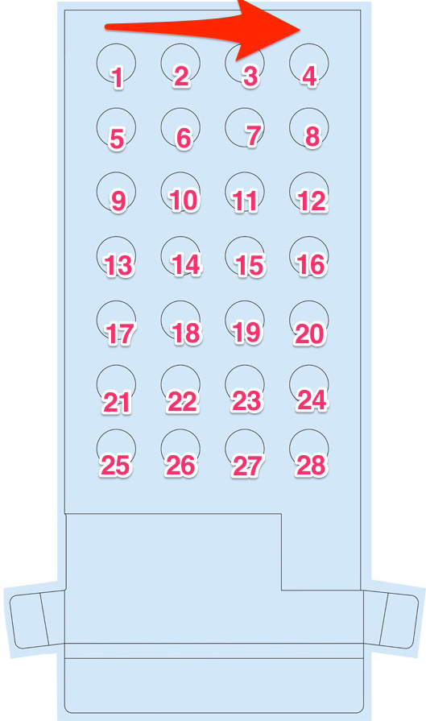
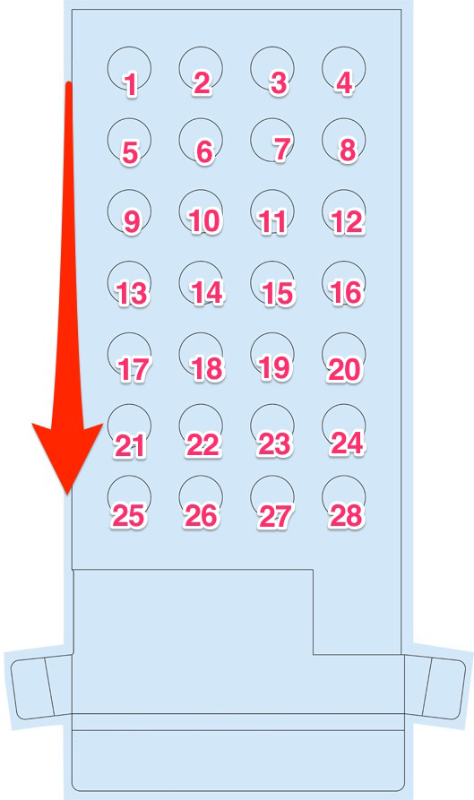

Overview
Api Endpoint
The API aims to take care of all data related to the MIA module itself, which is sending and receiving information from modules. Developers that use the API can, for instance, obtain all events from a module for a given patient, or register a prescription for a patient which then automatically will set reminders and other logic that interacts with the patient’s mobile phone. This page contains general information about the API, what models are available and what the latest changes are. Documentation about all available resources can be found at the resource page
https://api.mevia.com/v1/
The purpose of this setup is that API users will be able to concentrate on their business logic, henceforth not on how the modules work, which is abstracted away through the API. A benefit of this is also that, if the physical module changes, then there will be no impact on API users due to this abstraction.
Authentication and security
Example of how header should look:
All API calls are done via HTTPS requests, which means that all data obtained and retrieved from the API is delivered through an encrypted connection. Moreover, an API key must be sent with each request in order to authorize with the API. The key is used to idenfify which user that is connecting to the API and is initially handed out manually by Mevia.
In order to authorize with the API, the API key must be sent with each request as a request parameter in the request header.
Authorization: Token token="API KEY"
This means that the parameter name is ‘Authorization’ and the parameter value is 'Token token=“API KEY”’.
Versioning
Major Versions(x.y.z)
The major versions will be seperated through API url namespaces, e.g. https://api.mevia.se/v1/:resource and https://api.mevia.se/v2/:resource
Each major version will be supported as long as API users make use of it.
Minor Versions(x.y.z)
Includes new requirements, improvements and changes that does not affect API users and their interface with the resources they use. The API might add functionality, but does not change or remove existing API resources.
If an API resource is going to change or be removed, it will be marked as “depricated” long enough for API users to adapt, not breaking any functionality during the transition period for API users.
Bug Fixes(x.y.z)
Includes bug fixes that doesn’t change or functionality to the API, only fix behaviour so it works as expected to.
Flag types
This is a list of all flags that currently exists in the system. Flags are simply events occuring in the system that users can chose to be notified about.
| Type | Description | When is it sent? |
|---|---|---|
| LOW_BATTERY | A module is low on battery. | When a module has a battery status < 20% |
| SEQUENCE_ANOMALY | A pod was taken in the wrong order | When a patient takes a pod that is not the next expected pod |
| OUTSIDE_DOSE_INTERVAL | A pod was taken outside of any existing dose | When a patient takes a pod outside of any existing scheduled dose |
| ADHERENCE_ANOMALY | Someting went wrong from a adherence perspective | Whenever a adherence-related flag (currently: OUTSIDE_DOSE_INTERVAL and SEQUENCE_ANOMALY) is created. |
Notification Types
This is a list of all existing notifications types. A notification type is set on a notification policy, and is used to know when to create notifications.
| Type | Description | When is the notification sent? |
|---|---|---|
| BEFORE_DOSE_STARTS | Used to create notifications before doses starts | x minutes before the doses start, where x is the minutes variable on the notification policy |
| BEFORE_DOSE_ENDS | Used to create notifications before doses ends | x minutes before the doses start, where x is the minutes variable on the notification policy |
| AFTER_DOSE_END | Used to create notifications after doses ends | x minutes before the doses ends, where x is the minutes variable on the notification policy |
Example: A notification policy with notification_type: ‘BEFORE_DOSE_ENDS’ and minutes: 15, and a scheduled_dose_schema with start_time: '10:00’ and end_time: '11:00’ will generate a notification that is scheduled to be sent at 10:45 every day that its prescription is active.
Sequencing
Example JSON when posting (creating) prescription:
{
"prescriptions":{
"start_date":"2015-01-01",
"end_date":"2015-03-01",
"pod_sequence":[1,2,3,4]
},
"linked":{
.
.
.
}
}
When creating prescriptions, the API user has the option to create scheduled doses according to a package pod sequence. This means that the patient must take their pods according to a specific sequence on the package (tray), which is represented by numbers.
For example, the package with numbers can look as following:
 
For the left package, the sequence is [1,2,3,4,5,6,7,8,9,10,11,12,13,14,15,16,17,18,19,20,21,22,23,24,25,26,27,28]
For the right package, the sequence is [1,5,9,13,17,21,25,2,6,10,14,18,22,26,3,7,11,15,19,23,27,4,8,12,16,20,24,28]
This represents the order of which the pods should be taken (from left to right in the above arrays). The API user is not restricted to “horizontal” or “vertical” package sequences as shown above, this is just an example. The API user can insert any sequence in the packages/trays that can be taken, e.g. [1,3,5,7…] if the patient should take every second pod from left to right.
Practical assumptions when using sequencing
Example JSON when retrieving schedule dose which is based on the prescription above:
- When taking wrong pods in a sequence, or missing dose completely, the patient moves on to the next set of pods to take for next dose at the next time slot. This means that pods can be untaken when finishing a tray. This does not affect module dose planning, which is very important e.g. for reused modules with set date intervals.
- If no sequence is specified for prescriptions (pod_sequence == null) and no expected pods are given for scheduled doses, then any pod can be taken at any dose time interval in order to complete them. This is the default behavior.
{
"scheduled_doses":[
{
"id":"4744",
"period_starts_at":"2015-03-01T05:00:00.000+00:00",
"period_ends_at":"2015-03-01T12:00:00.000+00:00",
"is_taken":false,
"completed_at":null,
"nr_remaining_pods":3,
"expected_pods":[1,2,3],
"links":{
"prescription":"210"
}
},
{
"id":"4745",
"period_starts_at":"2015-03-01T16:00:00.000+00:00",
"period_ends_at":"2015-03-01T19:00:00.000+00:00",
"is_taken":false,
"completed_at":null,
"nr_remaining_pods":1,
"expected_pods":[4],
"links":{
"prescription":"210"
}
},
{
"id":"4746",
"period_starts_at":"2015-03-01T20:00:00.000+00:00",
"period_ends_at":"2015-03-01T22:00:00.000+00:00",
"is_taken":false,
"completed_at":null,
"nr_remaining_pods":2,
"expected_pods":[1,2],
"links":{
"prescription":"210"
}
}
]
}
Releases
Development - 1.7.0
Staging - 1.6.0
Production - 1.6.0
Datetimes to prescriptions
Prescriptions now have two new fields - starts_at and ends_at, both beeing datetimes. The old variables start_date and end_date are still available. Setting start_date=2015-05-05 will behave exactly like setting starts_at=2015-05-05 00:00:00, and setting end_date=2015-05-05 will behave exactly like setting ends_at=2015-05-05 23:59:59. Internally, this is exactly what happens as well.
Soft deletes of prescriptions
Prescriptions deleted will still be stored in the Mevia Database. Resources deleted by the delete-call will be saved as well. As of now, to restore any data, contact Mevia.
Offsets
Any call to Mapi fetching more than one resource can now be offset by setting the offset parameter in the call.
Limits
Any call to Mapi fetching more than one resource can now be limited by setting the limit parameter in the call.
Filters added
Resources with internal dates can now be filtered using date_from and date_to (can be dates or datetimes)
Orders
Resources fetched through Mapi can be now ordered by any available attribute.
RESTful doses
Doses can now be created without using a dose schema. Doses can be batch-created by sending a array of doses rather than a single resource. WARNING: Using both a dose schema and individual doses is not recommended when using expected pods.
Mia Modules are now independant from Prescriptions
Mia Modules no longer need a link to a prescription. Having a module that does not rely on a single prescription allows for fetching all events sent by a given module, as well as updating parameters of a module without having to redo the update every time the module changes user. This update contains a few new available resources under mia_modules.
Ability to ‘sign in’ to user using name and password
A new resource is available under api_user: login. The route simply returns the specified (by name) api_user together with all linked api_keys. This allows for fetching api_keys programmatically. By default, a user has no password, and can not use this feature. In order to set a password on a given user, contact us at Mevia.